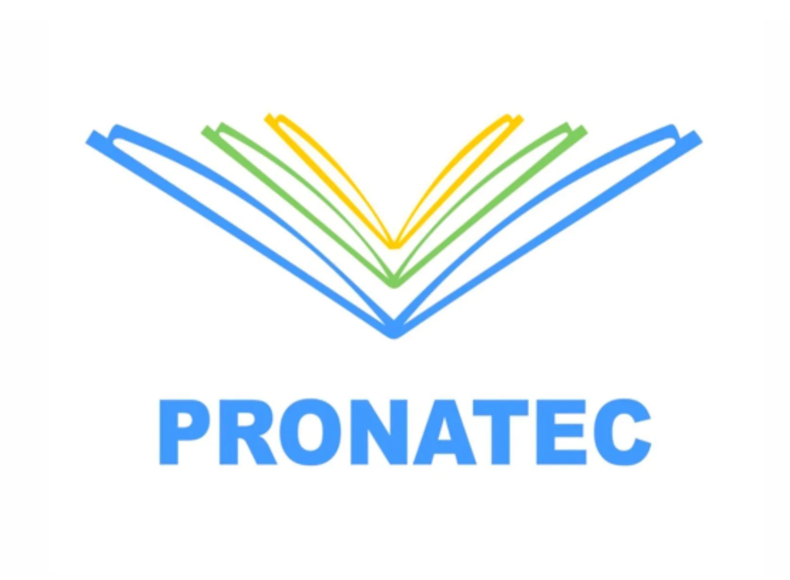
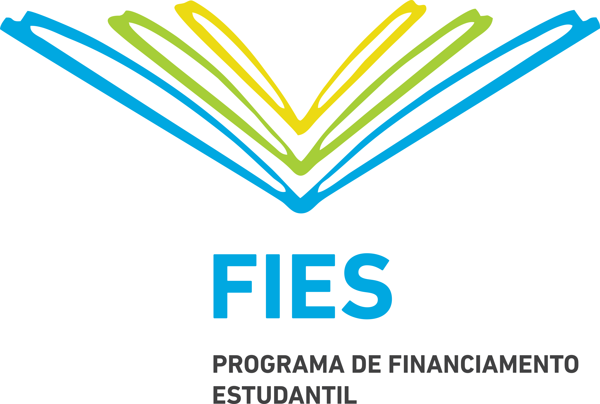
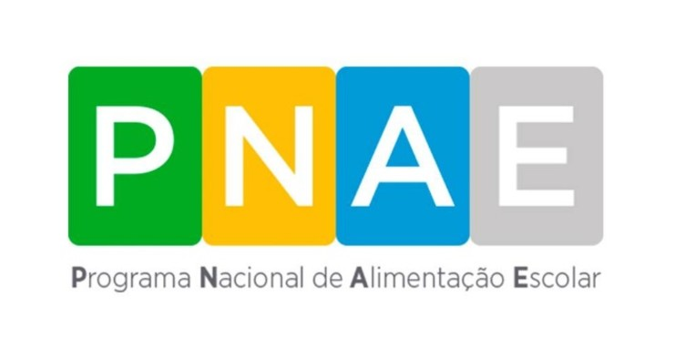
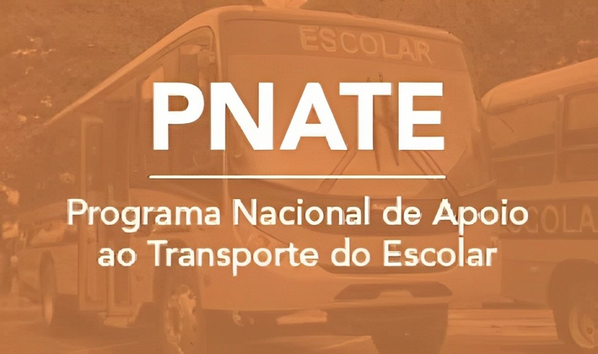
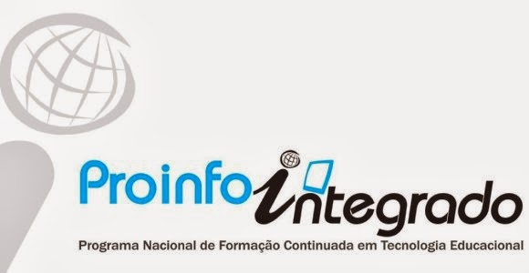

Programa Nacional de Acesso ao Ensino Técnico e Emprego (Pronatec):
O que é:
É um programa do Governo Federal do Brasil, criado em 2011, com o objetivo de ampliar o acesso à educação profissional e tecnológica para jovens e adultos. O programa oferece cursos de formação profissional em diversas áreas, tais como: administração, informática, turismo, saúde, construção civil, mecânica, entre outras. Os cursos são oferecidos por instituições de ensino técnico e tecnológico, como os Institutos Federais de Educação, Ciência e Tecnologia (IFs), o Serviço Nacional de Aprendizagem Industrial (SENAI), o Serviço Nacional de Aprendizagem Comercial (SENAC), entre outras.

A quem se destina:
Modalidades:
- e-Pronatec: Como forma de atender os participantes que, devido à rotina diária, não possuem tempo para participar de aulas presenciais, o Pronatec firmou parceria com a rede e-Tec Brasil, oferecendo cursos na modalidade a distância. Assim, o aluno pode acompanhar o conteúdo teórico pelo computador e, quando necessário, realizar as aulas práticas presenciais.
- Pronatec EJA: Os jovens e adultos que não concluíram os estudos durante os anos requeridos, também podem participar do programa. Para isso, o Pronatec oferece turmas especiais para alunos da Educação de Jovens e Adultos (EJA). Os cursos são oferecidos por meio da Bolsa Formação, sendo totalmente gratuitos.
Como acessar:
Diferente de outros programas de acesso à educação, a inscrição do Pronatec é realizada por intermédio da própria instituição de ensino, não possuindo prazos e datas preestabelecidas. Fique atento às oportunidades que são abertas durante todo o ano. Para consultar as vagas oferecidas na região, acesse o sitePronatec.
Fundo de Financiamento Estudantil (FIES):
O que é:
É um programa do governo federal brasileiro que oferece financiamento a juros baixos para estudantes cursarem o ensino superior em instituições privadas. O objetivo do programa é ampliar o acesso à educação superior, facilitando o pagamento das mensalidades ao longo do curso.

Como participar:
Programa Nacional de Alimentação Escolar (PNAE):
O que é:
É uma iniciativa do governo federal brasileiro que garante a oferta de alimentação escolar adequada, nutritiva e saudável para os estudantes da educação básica pública. Esse programa tem como objetivos principais contribuir para o crescimento e desenvolvimento dos alunos, melhorar o rendimento escolar e promover hábitos alimentares saudáveis.

A quem se destina:
Como acessar:
Para acessar os recursos federais do PNAE, basta que os estudantes, as escolas e as turmas da educação básica pública estejam registrados no Sistema do Censo Escolar (O acesso é garantido automaticamente aos estudantes matriculados na rede pública de educação básica), realizado pelo Instituto Nacional de Estudos e Pesquisas Educacionais Anísio Teixeira (INEP).
Programa Nacional de Apoio ao Transporte do Escolar (Pnate):
O que é:
É uma iniciativa do governo federal brasileiro que tem como objetivo garantir o transporte escolar de qualidade para os alunos da educação básica pública, especialmente para aqueles que moram em áreas rurais ou de difícil acesso.

A quem se destina:
Como acessar:
O programa consiste na transferência automática de recursos financeiros, sem necessidade de convênio ou outro instrumento congênere.
Programa Nacional de Tecnologia Educacional (ProInfo):
O que é:
O objetivo do programa nacional de tecnologia educacional é promover a inclusão digital nas escolas públicas de educação básica, facilitando o acesso a tecnologias educacionais que auxiliem no processo de ensino e aprendizagem.

A quem se destina:
- Estudantes e professores da rede pública de ensino.
Como acessar:
Para adquirir equipamentos do ProInfo, estados e municípios incluem o pedido de aquisição na adesão ao Plano de Ações Articuladas (PAR). Após a adesão e com a aprovação do PAR, o FNDE repassa recursos para os entes.
Fundo de Manutenção e Desenvolvimento da Educação Básica e de Valorização dos Profissionais da Educação (Fundeb):
O que é:
O Fundeb funciona como um fundo nacional destinado ao financiamento da educação básica pública. Independentemente da fonte de origem dos valores que compõem o fundo, todo o recurso gerado é redistribuído para aplicação exclusiva na manutenção e no desenvolvimento da educação básica pública, bem como na valorização dos profissionais da educação, incluída sua condigna remuneração.
Os alunos considerados são aqueles atendidos:
Como acessar:
Os recursos procedentes do Fundeb são distribuídos de forma automática (sem necessidade de autorização ou convênios para esse fim) e periódica, mediante crédito na conta específica de cada governo estadual e municipal. A distribuição é realizada com base no número de alunos da educação básica pública, de acordo com dados do último Censo Escolar.